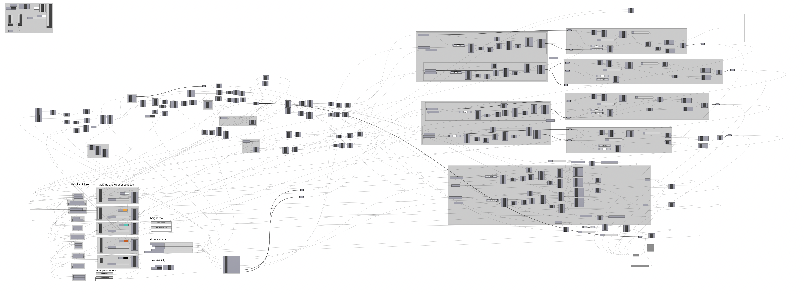
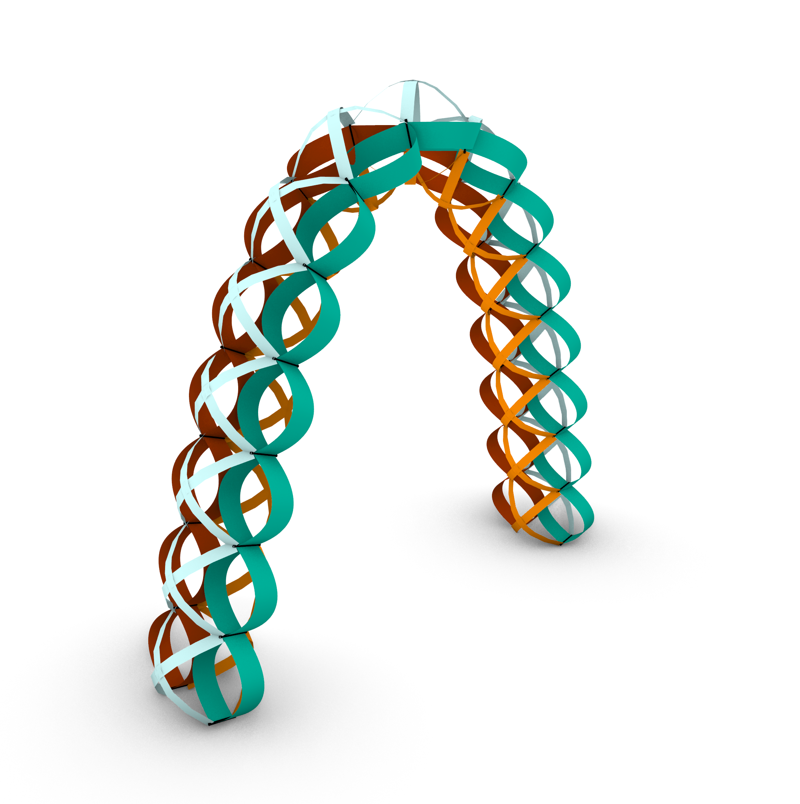
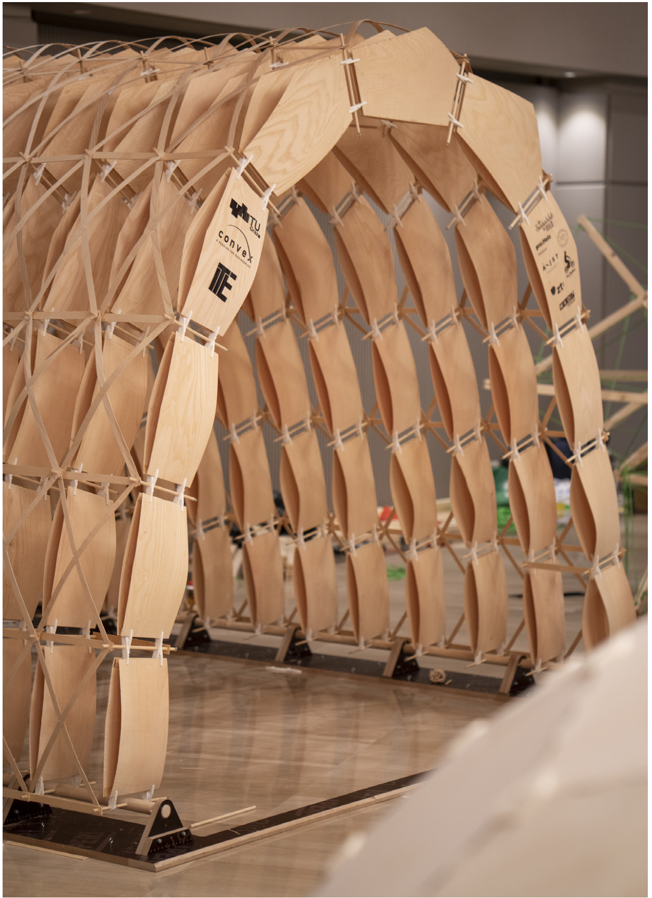
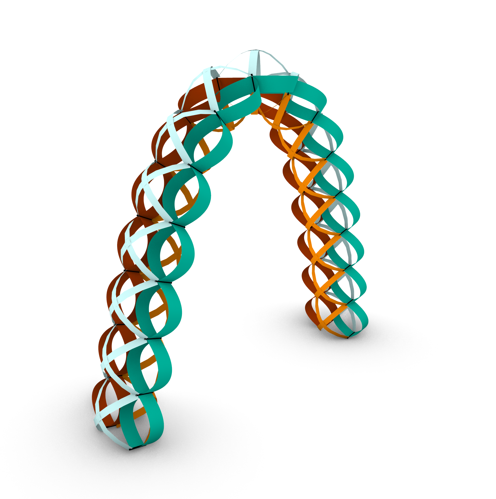
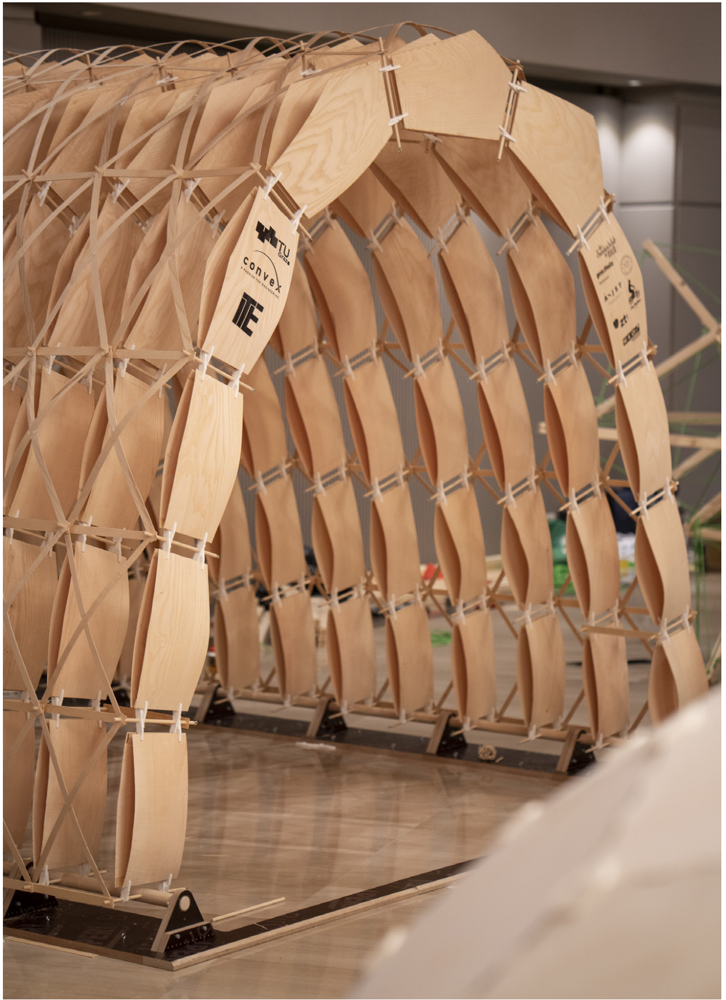
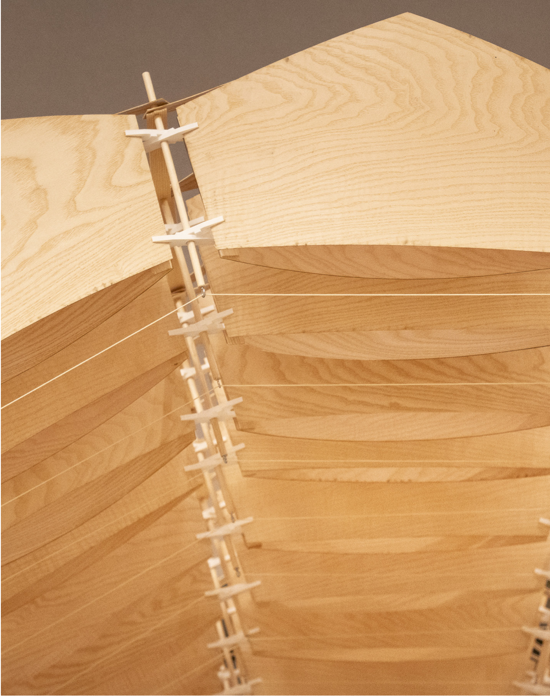

expo_pavillion
10/2019lightweight adaptive structure
As part of a team we developed an adaptive structure pavillion. The structure is built out of prestressed elements to ensure the stability of the object. These elements can further be compressed by a string and pulley system to allow it to change its shape. This principle could be used i.e. to improve airflow in a tunnel system. My contribution to the project was the development and creation of 3d geometry, parametrization and simulation of the structure as well as the simulation and development of the movement. The project took part in the international IASS competition in Barcelona and has been awarded first prize.

 

Image rights: ITE @ www.tugraz.at


Image rights: ITE @ www.tugraz.at
 Image rights: ITE @ www.tugraz.at